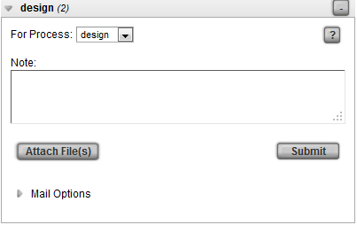

-
First, load a view of items you wish to track notes for.
If the Notes column is not already in the view, it can be added through the column manager.
Note
In TACTIC 3.7+, the notes column can also be added to your view in the gear menu under Notes -> Add Notes Column
-
Click the [+] on in the notes column on the item you wish to add a note to.

-
In the add dialog, first select the process. If no tasks are assigned the process will be "default" otherwise, the task processes will be available in the list
-
Add the note then click submit.
Note
If notifications are setup, an email will also be sent for the note. If you would like to setup automated emails Please review the Notifications section in the TACTIC Setup documentation.